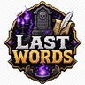
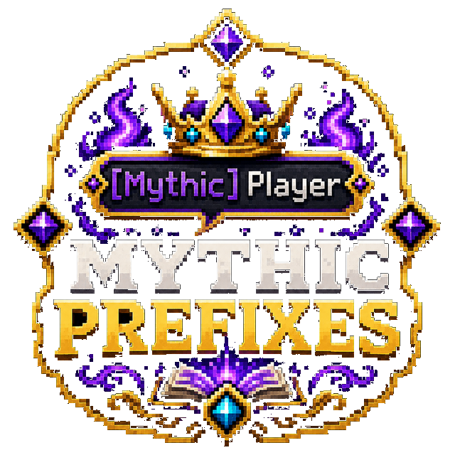

✓
597 default funny messages
Launch with a large varied catalogue rather than writing every line from scratch.

Hundreds of funny death messages with an in-game editor.
Full overview
LastWords replaces repetitive vanilla death messages with a large cause-aware library built for personality and variety. Rather than selecting a random line from one global list, the plugin can choose messages that match how the player actually died.
A built-in editor lets staff manage the message catalogue on a live server. This avoids constant file editing and makes it practical to refine jokes, formatting and placeholders as the community develops its own tone.
How it works
When a player dies, LastWords identifies the relevant cause and chooses from the matching message pool. Placeholders are replaced with player, killer, weapon or environmental context where available.
Messages can be reviewed and changed through the editor, while optional Discord webhooks present deaths with consistent colours and player imagery. The result is a single death-message system for both in-game chat and community channels.
Administration
Formatting, prefixes, cause pools and webhook behaviour are configurable. The plugin is designed to coexist with common chat and permissions setups while keeping ownership of the final death message in one place.
Feature breakdown
Each headline feature is expanded below so visitors can understand the real server use rather than seeing a short tag list.
Launch with a large varied catalogue rather than writing every line from scratch.
Falls, mobs, fire, projectiles and other causes can each have their own tone.
Add, remove and review messages without leaving Minecraft.
Keep server ranks and chat presentation consistent around death output.
Mirror deaths to Discord with structured, readable embeds.
Control colours, wording, placeholders and presentation from configuration.
Getting started
The platform buttons include downloads, changelogs and the original public resource discussion.
Install the plugin and allow the default message library to generate.
Review formatting and cause-specific pools.
Configure the optional Discord webhook.
Use the editor to adjust messages to the tone of the community.
Community feedback
Live ratings and recent written reviews from the public Spigot resource page.
Review data is loaded through Spiget. Static rating fallbacks remain visible if the service is unavailable.
Related projects

Direct Release PlannedChat & Cosmetics
A prefix marketplace and complete lightweight chat formatter.
Combat Immersion
Responsive blood trails, pools, bursts and bleeding effects.
Survival Utility
Crystal-themed healing tools for survival gameplay.